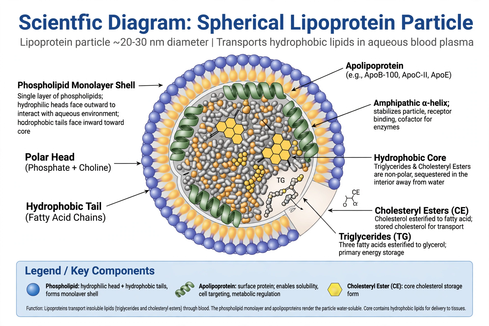

| Lipoprotein | |
 Structure of a lipoprotein particle | |
| Components | Phospholipids, cholesterol, triglycerides, apolipoproteins |
|---|---|
| Function | Transport of lipids through the bloodstream |
| Classes | Chylomicrons, VLDL, IDL, LDL, HDL |
A lipoprotein is a biochemical assembly whose primary function is to transport hydrophobic lipid (fat) molecules in water, as in blood plasma or other extracellular fluids. Because lipids such as cholesterol and triglycerides are insoluble in water, they must be carried inside particles whose surface is made of amphiphilic phospholipids and proteins called apolipoproteins, while the core holds triglycerides and cholesteryl esters.
A lipoprotein particle has a spherical structure: a monolayer of phospholipids and free cholesterol forms the outer shell, with the hydrophilic heads facing outward toward the water and the hydrophobic tails facing inward. Embedded in this shell are apolipoproteins, which act as ligands for cell-surface receptors and as cofactors for enzymes. The interior contains the most hydrophobic lipids — triglycerides and cholesteryl esters.
Lipoproteins are classified by density, which increases as particle size decreases and the proportion of protein rises:
The exogenous pathway moves dietary fats from the gut via chylomicrons; the endogenous pathway moves liver-produced lipids via VLDL, which is progressively stripped of triglycerides by lipoprotein lipase to become IDL and then LDL. LDL is cleared mainly by LDL receptors in the liver. Defects in these receptors cause familial hypercholesterolaemia. HDL particles acquire cholesterol via the ABCA1 transporter and the enzyme LCAT.
Elevated LDL cholesterol is a major risk factor for atherosclerosis and cardiovascular disease, while lipoprotein(a), an LDL-like particle with apolipoprotein(a) attached, is an independent inherited risk factor. Lipoprotein profiles are measured in standard lipid panels.